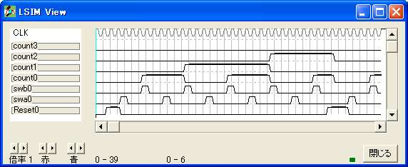

{ =============================================== }
{ 計数器 }
{ =============================================== }
logicname sample
{ =============================================== }
{ 手続き譜 }
{ =============================================== }
procedure sw
input swa,swb;
output q;
bitr regq;
if (swb)
regq=0;
else
if (swa)
regq=1;
else
regq=regq;
endif
endif
q=regq;
endp
{ =============================================== }
{ 実効譜 }
{ =============================================== }
entity main
input Reset;
input swa,swb;
output count[4]; {※}
bitn q;
bitr on[2];
bitr regcount[4]; {※}
if (!Reset)
q=sw(swa,swb);
if (q)
if (on==0)
on=1;
else
on=2;
endif
else
on=0;
endif
if (on.0)
regcount=regcount+1; {※}
else
regcount=regcount; {※}
endif
endif
count=regcount; {※}
ende
{ =============================================== }
{ 機能実行譜 }
{ =============================================== }
entity sim
output Reset;
output swa,swb;
output count[4]; {※}
bitr tc[5];
input simres;
simres=0;
part main(Reset,swa,swb,count) {※}
if (!simres) tc=tc+1; endif
switch(tc)
case 0: Reset=1;
case 1: Reset=1;
case 2: Reset=1;
case 3: swa=1;
case 6: swb=1;
case 9: swa=1;
case 12: swb=1;
case 15: swa=1;
case 18: swb=1;
case 21: swa=1;
case 24: swb=1;
case 27: swa=1;
case 30: swb=1;
endswitch
ende
endlogic
